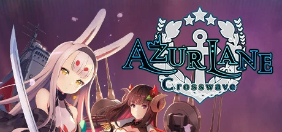

蛮啾网络的成名作，把二战军舰拟人成美少女「舰船」的横版弹幕射击养成手游。你扮演指挥官，在塞壬入侵的海洋世界里建造、编队、养成舰船，前排走位躲弹幕、后排炮击航空清屏。以「最懂二次元」的角色美术、不逼氪不逼肝的良心运营著称，2017 年登顶日本 App Store 畅销榜，运营八九年仍是 B 站财报里的长青支柱——也是《蓝色星原：旅谣》的美术 DNA 与玩家盘源头。
想象一片被塞壬夺走的蓝色海洋：数十年前深海的敌人突然来袭，人类丢了九成制海权，科技一路倒退。走投无路的白鹰、皇家、重樱、铁血只好摒弃前嫌，把各国最强的军舰意志具象成美少女「舰船」，组建同盟「碧蓝航线」反攻。可等塞壬第一次被打退，同盟自己又因立场分裂内战——重樱偷袭白鹰、铁血东扩，昔日战友结成对立的赤色中轴。
你是指挥官——这支舰队的统帅，也是把一盘散沙重新拧成舰队的人。舰船们以历史战舰之名诞生，一出生就是成体、没有童年，却各有各的执念：企业背着「幸运 E」的战绩独行，贝尔法斯特端着红茶把后勤打理得滴水不漏，拉菲抱着枕头困得睁不开眼也要替你上阵。而更强大的塞壬正在卷土重来，你必须说服这些因阵营反目的舰船，再一次并肩。
你第一次给某艘舰船送出誓约婚戒、听她说出专属台词的那个瞬间，你会意识到这支舰队早已不只是战力数字。可当赤色中轴的舰船举炮相向，你才发现「敌我」在这片海里从来不是黑白分明——爱宕会为重樱而战，也会为你心动。这不是一个关于赢下战争的故事，而是一个关于「把散落各国的她们，重新聚成一个家」的故事——下一次塞壬来袭时，你想带着谁一起出海？
军舰拟人 × 二次元宅向美学，是蛮啾把冰冷的二战钢铁战舰与撩人的美少女角色设计反直觉缝合的招牌风格。底色是以真实军舰为原型的舰装武备——主炮、鱼雷、舰载机化作少女身上的机械翼与武装；变异在于用高完成度 Live2D 立绘把每艘舰船做成会呼吸、会动、有专属语音的「老婆」。色彩上按阵营锁定白鹰星条蓝 × 重樱樱粉 × 铁血铁灰的多国色系，整体调性介于军武写实的硬朗与二次元萌系的柔软之间。
「军武少女化」的视觉共识跨越了近三十年。1990 年代《美少女战士》一脉把「战斗少女」推成日本动画主流母题。2013 年《舰队 Collection》（舰これ）首次把二战军舰拟人成少女、掀起舰娘热潮，定义了「舰装」这一视觉语法。2015 年《少女前线》把武器拟人做成高完成度立绘养成。2017 年《碧蓝航线》集大成——把舰娘题材配上顶级 Live2D 立绘与多国阵营美学，登顶日本畅销榜，被视为中国二次元研发追平乃至反超发祥地日本的标志。2024 年其 3D 后宅玩法又为蛮啾积累了角色动态刻画经验，最终在 2026 年接力到《蓝色星原：旅谣》的 3D 幻想大世界。
基于体验清单 · 审美偏好 · IP故事三维度综合选出
点击链接跳转到对应平台查看 · 仅整理外部链接